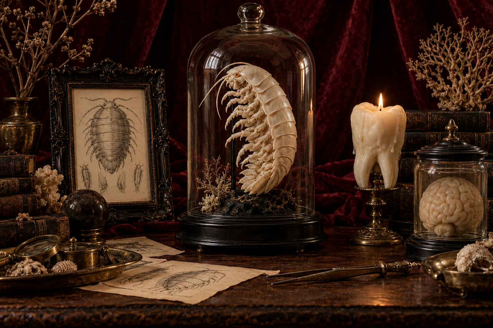
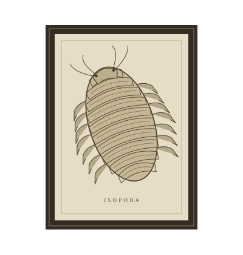

O extraordinário
habita o estranho.
Pequenas relíquias para grandes curiosos.
Arte, velas e objetos que não passam despercebidos.

incomum✦
Escolha sua próxima estranheza.
Uma pequena coleção.
Infinitas maneiras de ser diferente.
ORDEM DO ACERVOEm destaque
Essa curiosidade ainda não está aqui.
Experimente outra busca ou explore a coleção completa.
Cada peça, um pequeno desvio do óbvio.
✦
ISOPODA · ESTUDO Nº 001Para os que nunca
couberam no comum.
Um isópode, um dente, um cérebro em um pote. A natureza tem suas esquisitices. Nós também.
A Isopod Store é um pequeno gabinete de curiosidades: um encontro entre arte, anatomia e aquele fascínio inexplicável pelo que é diferente.
Encontre algo que pareça com você ↗Pequenas dúvidas.
O estranho pode ser simples.
O que vou encontrar por aqui?+
Gravuras, velas escultóricas e objetos decorativos inspirados em anatomia e história natural. Abra cada peça para conhecer materiais, técnicas e dimensões.
Como cuidar das peças?+
Cada material pede um cuidado. Nas gravuras, evite umidade e sol direto. Nas velas, use uma base resistente ao calor e nunca deixe a chama sem supervisão. Consulte os cuidados específicos na página da peça.
Posso comprar pelo site?+
Esta versão é uma vitrine demonstrativa. Você pode explorar as peças, montar sua sacola e simular um pedido. Nenhuma cobrança ou envio real é realizado.
As imagens representam o produto final?+
As ilustrações e a composição de abertura são representações artísticas. Consulte as descrições de materiais e dimensões de cada peça para conhecer a proposta do acervo.